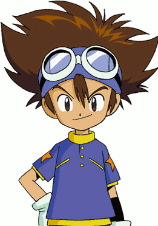
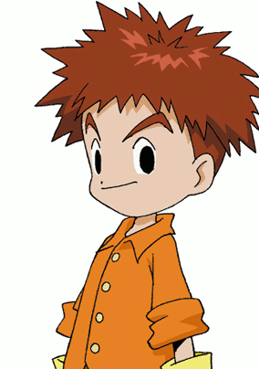

角色介紹
-

八神太一,御台场小学五年级学生，八神嘉儿的哥哥，亚古兽的搭档，勇气徽章的持有者。
-

石田大和,御台场小学五年级学生，高石武的哥哥，昵称阿和， 拍档是加布兽，徽章是蓝色的友情。
-
武之內素娜,御台场小学五年级学生，搭档是比丘兽，徽章是红色的爱心。
-

泉光子郎,御台场小学四年级学生。 拍档是甲虫兽，徽章是紫色的知识。
-

太刀川美美,御台场小学四年级学生。 拍挡是巴鲁兽，徽章是绿色的纯真。
-
城戶丈,御台场小学六年级学生,昵称为阿丈 、阿助,拍档是哥玛兽，徽章是灰色的诚实。
-
高石武,河田小学二年级学生，石田大和的弟弟，昵称阿武，也有四分之一的法国血统。 拍档是巴达兽，徽章是金黄色的希望。
-
八神嘉兒,日文原名八神光。御台场小学二年级学生，八神太一的妹妹。 拍档是迪路兽，徽章是粉红色的光明。